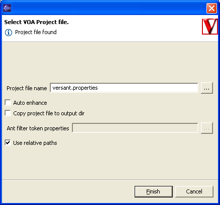

Versant OpenAccess Eclipse Tools Plugin
www.versant.com |
Versant OpenAccess is a high performance Java Data Objects implementation supporting leading commercial and open source relational databases. This plugin integrates JDO enhancement into the Eclipse build process. Some features of the standalone OpenAccess Workbench is integrated into the VOA Perspective and can be used to edit mappings and to setup a project. |
Using OpenAccess Tools with an Eclipse project
Adding the VOA Nature to your project
Open the 'VOA JDO' Perspective.
('Window' >> 'Open Perspective' >> 'Other'
Select 'VOA JDO' and press OK)
In the VOA Mapping view, add the VOA nature to your project using the right click popup menu.

- Project file name. Specifies the location of the OpenAccess (versant.properties) project file.
- Auto Enhance. Enhance persistent classes whenever they are recompiled. The Enhancer is added to the 'External Tools Builders' section. You can always enhance manually by selecting 'Versant OpenAccess' >> 'Enhance classes' from the project popup menu.
- Copy project file to output dir. Copy the project file to the project classpath on enhancement. This is useful if the project file is not in the classpath or if you want to use an Ant style token replacement.
- Ant filter token properties. This is used to resolve Ant filter tokens in your OpenAccess project file when it is copied to the classpath. This option is only available if 'Copy project file to output dir' is selected.
- Use relative paths. All paths are stored relative the project if selected.
Select a VOA Project file name. The default is versant.properties in you project root.
We recomend that you select 'Auto enhance' to let VOA automatically enhance your persistent classes after compile.
You can have VOA copy your project to the output path so it is always on your classpath.
You should now see you VOA Project Properties.
Making a class persistent
To make a class persistent go to the Package Explorer in the Java perspective.
Find the class node in the tree (please note: not the .java file node). In the
right click popup menu select 'Versant OpenAcces' >> 'Make persistent'
Your persistent class will now be visible in the VOA Mapping view.
For more information visit www.versant.com.